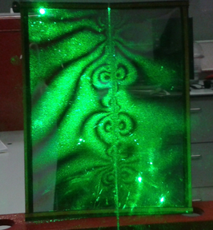
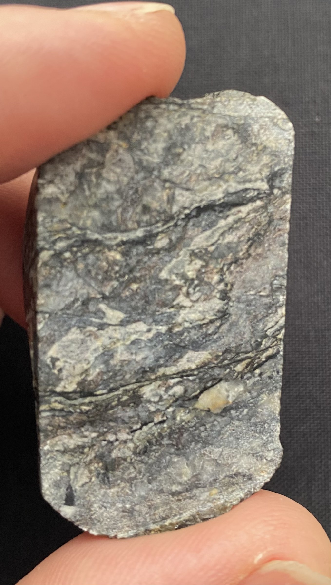
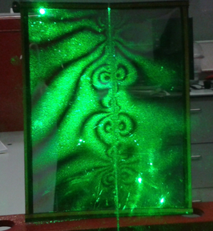
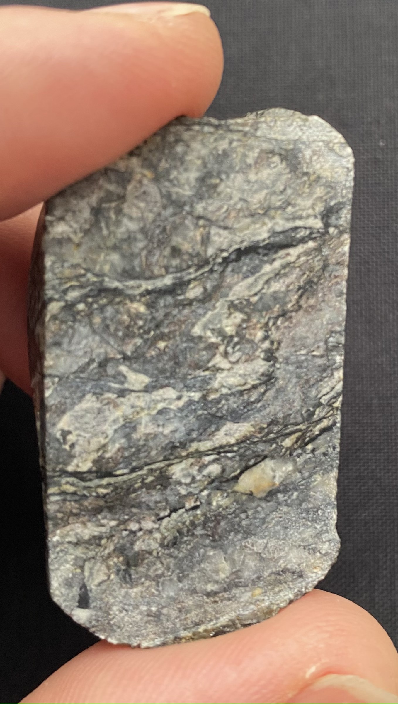

ALL THINGS RESEARCH
The reserach blog of Stefan Nielsen

Geophysics of the environment
Over the past few years I have added near-surface geophysics to my research. I use geophysical tools in unconventional ways to explore archaeology, geoarchaeology, uderground water flow, water inflitration in historical monuments and other environmental issues.
Living, working and leading student field trips in the North East and in the Lakes district, with their rich historical, prehistorical and natural backgroung, opened for me a myriad of opportunities to explore what is under our feet in everyday's life. What with (...)
 



Earthquakes! Rupture and fault mechanics
The first time I felt an earthquake I was mesmerised. I always think that this is the way I would feel in a chance encounter with a wild beast like an elephant or a majestic tiger. Stand in awe of the power of nature, feeling thrilled and terrified all at once.
This fascination has stuck with me throughout the years, in spite of the tediuos mathematical and numerical chores involved with quantitative earthquake research. But earthquakes of course are not garden-variety pets for fun. They are the main cause of death by natural disasters, although recently, flash floods are catching up, those freak weather events triggered by climate change instability. Feeling helpless in front of these disasters, and yet, the intuition that this may be mitigated (...)
BLOG ENTRY
Title description, April 2, 2014
Mauris neque quam, fermentum ut nisl vitae, convallis maximus nisl. Sed mattis nunc id lorem euismod placerat. Vivamus porttitor magna enim, ac accumsan tortor cursus at. Phasellus sed ultricies mi non congue ullam corper. Praesent tincidunt sed tellus ut rutrum. Sed vitae justo condimentum, porta lectus vitae, ultricies congue gravida diam non fringilla.
About me
I am a geophysicist and a Professor at Durham University, Earth Sciences Department
Posts
-
A better day
in a life of -
Really?...
surprising facts and friction -
Nice try
the pitfalls of A.I.
Tags
Travel New York London IKEA NORWAY DIY Ideas Baby Family News Clothing Shopping Sports Games